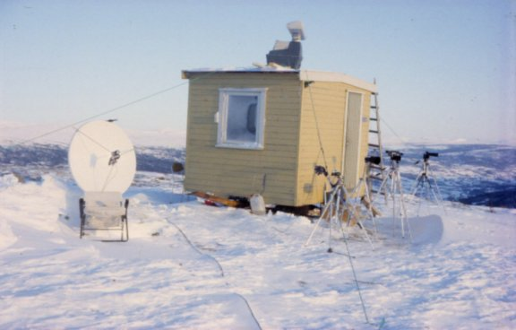

Between April 1950 and March 1951 a three point programme, Project Twinkle Project Twinkle final report, 27 November 1951, was initiated and included the following equipment:
- optical tracking with Askania photo theodolites (Fig. 6) in order to provide trajectory data and photo records;
- optical spectra-photography using standard cameras with suitable diffraction gratings; and
- electronic frequency measurements using Signal Corps Engineering Laboratory equipment.
The Air force established a number of observation posts in the vicinity of Vaughn, New Mexico, for the purpose of photographing and determining the speed, height and nature of the unusual phenomena referred to as "green balls and discs". A round the clock watch was maintained.
The Project Twinkle final report concluded on the overall negative results obtained from the year of vigilance and inquiry, and that no conclusive opinion on the aerial phenomena of interest had been reached. The overall results were not satisfactory, especially due to a reduction of activity of the phenomenon at the equipment’s locations. However the final report indicates that on two occasions some objects were photographed with the Askania theodolites during some Bell aircraft missile and V-2 launchings. In addition, the projects records and some Blue Book Project Blue Book was one of a series of systematic studies of Unidentified flying objects (UFOs) conducted by the United States Air Force (USAF.) between 1952 and closed in 1969. correspondence also confirm that several photos were also obtained in 1950.
Despite the fact that no relevant data was obtained from the theodolites at these occasions and that no definitive conclusion as to the identity of the objects was made, the sightings and pictures established that some type of object did exist Project Blue Book report no 5 (31/03/1952)..
1953 USA: Air force videon cameras
As from the beginning of 1952 the US Air Force was confronted with a massive increase of UAP reports across America (Fig. 7). In order to determine whether or not reported UAP were actually some new type of aircraft or merely misidentification of know objects, the use of spectrum analysis was suggested as an identification aid. A group within the US Air Force, the Air Technical Intelligence Center (ATIC), developed a camera equipped with a diffraction grating. These special cameras, the commercial model of which was called Videon, combined the stereo-camera and the spectrographic principle. It would break down the light received from any object into its various components. This would permit the determination of the element or combination of elements of which an object would be composed.
By June 1953, approximately 75 cameras had been distributed to Air Force control towers and selected radar stations operators, in 33 states around the country "AF Cameras to eye streaking objects", The Washington Post 02/12/1953.. Unfortunately it was found out that the light gathering power of the lenses was too low and that the diffraction gratings were deteriorating quite quickly. According to the records only a few worthless pictures were obtained through this approach. During 1958 the possibilities of more extensive instrumentation were also discussed by the Air Force.
Other suggestions for more complete cameras, special aircraft instrumentation (e.g. USAF fighters-interceptors aircrafts also equipped with diffraction gratings over the lenses of 16 mm gun cameras) and other detection devices were put forward and analysed. However no further study contract for such instrumentation was either started, in light of the belief that the cost of such a programme would outweigh the results.
1953 CANADA: Project magnet
{kind=link}
In 1950, Smith, a senior radio engineer from the Department of Transport, requested his superiors to make use of a laboratory and the department’s field facilities for a study of UAP and the physical principles associated to them. Project Magnet was authorized in December 1950 by Commander Edwards, then Deputy Minister of Transport for the Air Services, and was justified by the belief that it might be possible to use the Earth’s magnetic field as a propulsion method.
The purpose was to study magnetic phenomena, particularly the ones resulting from unusual boundary conditions in the basic electromagnetic theory. Smith thought that there was reason to believe that such phenomenon existed and that their discovery would open up a new and valuable technology. The initial programme included in particular the investigation into the possibility of producing an effect of a "sink" in a magnetic field, and some experiments for qualitatively examining various theories regarding the feasibility of converting geomagnetic energy into electrical energy Library and Archives Canada, Canada’s UFOs: the search for the unknown, Project Magnet Report..
Smith, intrigued by the large number of sightings of UAP, generally called "Flying saucers", raised the question as to whether such objects could be emissaries of some other civilization having a technology somewhat different then ours, and possibly more advanced in magnetism. After having completed some theoretical work and analysed many Canadian UAP cases, Smith believed that the phenomena could logically be accompanied by some measurable physical characteristics. To him, whether a sighting was an alien vehicle or had natural electromagnetic causes, there would probably be magnetic or radio noise disturbances, perhaps some gamma radiations, and even gravity waves associated with it.
With these goals in mind, in November 1953 Smith set up a group of instruments in a hut at Shirley Bay (20 miles outside Ottawa) with the objective to attempting to get measurements related to UAP sightings and to seek scientific proof of their existence (Fig. 8).
The intention was to man the station 24h a day. As reported in the Canadian press H. Greer: "Flying Saucers or Not? Canada Sighting Station to Seek Scientific Proof", Toronto Star, 11/11/1953., which nicknamed the hut the "Canadian flying saucer observatory", some complex and expensive equipment had been installed in the saucer observatory": An ionospheric reactor to determine the height, pattern and conduct of the ionized layer of gases several hundred miles in the atmosphere, a counter to detect atomic rays from the outer atmosphere, various types of radar, a gravimeter imported from Sweden to measure the Earth’s gravity, a magnetometer to measure the variations in the magnetic field, and a radio set running full volume at 530 kilocycles for picking up any radio noise.
Probably in relation to excessive mainstream press attention towards the Shirley Bay’s facility, Project Magnet was officially discontinued mid-1954 by the Department of Transport, without the time or fortune for obtaining any relevant data.
1963 FRANCE: Magnetic detectors
In Europe the governments decided not to be involved in the controversy, and contrary to the USA and Canada did not implement any specific instrumentation project for studying the phenomena, in the late 1950s and early 1960s, despite also being confronted by a significant number of UAP sightings. Any such study was left to various civilian associations. Some UAP researchers had noticed that the UAP literature included many alleged cases of magnetic disturbances associated to the sightings, such as compass disruptions or car breakdowns. This led to the idea of building up local magnetic devices aimed at early UAP warning systems.
In relation to this approach, it is worthwhile to mention the French association "Lumieres Dans La Nuit" (LDLN) which at the beginning of the 1960s not only designed and built up some magnetic detectors but also set up a nation-wide network as early as 1963. The LDLN’s policy was to distribute to the public as many of these detectors as possible (called GEOS), in order to demonstrate the correlation between the UAP sightings and magnetic disturbances.
The apparatus was composed of a compass directly connected to an electric circuit, which range in the event of a deviation. Around 1968/1969, the LDLN network included approximately 450 detectors spread throughout France. Despite some detector calls (58) and some alleged cases of correlation between a detector’s ring and a UAP sighting (only 8), the interest in the approach gradually vanished at the beginning of the 1970s.
The main reasons appeared to have been related to technical deficiencies of the detectors (too sensitive) and a loss of interest from the public who had been equipped with them.
1972 USA: The Topenish field study
The first civilian UAP field study took place in August 1972 on the Yakama Indian reservation (7250Km2) in Toppenish, Washington. Due to a noticeable increase of UAP sightings from law enforcement personnel around the reservation area and in nearby towns, Akers, a private investigator, decided to set up an intensive eleven day long field study aimed at capturing instrument recordings of some reported anomalous luminous phenomena (ALP).
Authorisation was granted from the Yakima Tribal council, the Bureau of Indian affairs and the Agency Forestry Division to undertake the project. As underlined in the project’s report W. Akers David, Report on the investigation of nocturnal light phenomena at Toppenish, Washington, 02/11/1972. a primary objective was to determine the feasibility of "staking-out" a scientific observer in an area of high sighting probability, with the purpose in mind of obtaining hard data concerning the UAP.
A "hit and run" strategy, of moving the instruments to a location where activity would be observed, was to be followed. The priority was to obtain photographs, including spectrographs and position data, and also to eventually acquire data relating to any magnetic effects which might arise from UAP activity. The field investigation involved setting-up portable observation equipment at selected locations for several days a time. Observation lookouts were established at six different locations in the Yakama Indian reservation.
The instruments used by Akers, all battery operated, were covering three different ranges: firstly the sound recording (WWV time receiver, crystal controlled reference oscillator, cassette tape recorder); secondly the optical range (two single lens reflex cameras, one equipped with a 55 mm lens and replica grating to permit recording of spectral data, a 16mm motion picture camera, a 35mm range finder camera) and thirdly the magnetic and radiation measurements (a compass spin detector, an automatic recording magnetometer, a G-M counter Gamma and beta).
The results of the field study were satisfactory. Various observations of suspected anomalous lights were made by the investigator, and several of them recorded on film. Unfortunately all the sightings and pictures related exclusively to round lights situated at far distances (the closest activity had been at eight miles). However and most importantly, Akers had demonstrated for the first time the validity of a placing an observer into an area of frequent UAP sightings and the feasibility of obtaining scientific measurements of the phenomena. In his conclusions, Akers acknowledged the practical experience gained from the eleven day long field study and also that nothing in his nocturnal observations had point towards an extraterrestrial source of activity. Still he was persuaded that something unusual was taking place, something which warranted a continuous and objective examination.
1973 USA: Project identification
In response to a flurry of UAP sightings near Piedmont, Missouri, Rutledge, then Chairman of the Physics Department at Southeast Missouri State University, decided in March 1973 to lead a field investigation. Assisted by a team of colleague professors, qualified students, scientists and amateur enthusiasts and having managed to secure some funding from one of the three largest metropolitan newspapers in Missouri (the St Louis Globe-Democrat); Rutledge ran a seven year long study.
This field investigation of the UAP phenomena, called "Project Identification", had two objectives: firstly to measure the physical properties of the lights and/or objects in the sky and secondly to identify their origin. Rutledge's innovative approach was to study the unknown phenomena while it was in progress, and no longer after the fact. Having read the final US Air force report on UAP (Scientific Study of Unidentified Flying Objects), Rutledge explained the failure of earlier government efforts could be attributed to the fact that the programme administrators did not recognize the need for observation stations in the field, and that instead the official teams responded to reports of sightings in progress, thereby arriving too late on the scene.

Rutledge's goal was to obtain data by the use of highly scientific instrumentation such as radar, electromagnetic frequency analyser, high-frequency low-intensity sound detector, spectroscopic camera, Questar astronomical telescopes with cameras attached and photographic equipment. From 1973–1980, Rutledge set up a total of 158 viewing stations (Fig. 9) in three major geographical areas, during which the sky was watched for 427h, by more than 600 observers at various times. Having precisely catalogued different characteristics of the various sightings, Rutledge attempted to calculate the actual velocity, course, position, distance, shape, colour, size and behaviours of the UAP.
In the final report of Project Identification H.D. Rutledge, Project Identification, Prentice-Hall, 1981, p. 211, Rutledge quotes a total of 157 sightings of 178 UAP, of which there were 34 class A sightings (light or/and objects displaying bizarre behavioural and/or physical properties that defied a conventional explanation) of 45 UAP.
Unfortunately, out of a tantalizing number of 700 project photographs, not one exposure of a Class A
sighting had been obtained. Still, he was convinced without a doubt that his research had established
the existence of a real UAP phenomenon, but a very subtle one as illustrated in his conclusions "...In
that research, more was involved than the measurement of physical properties of UFOs by
dispassionate observers. A relationship, a cognizance, between us and the UFO intelligence evolved.
A game was played. In my opinion, this additional consideration is more important than the
measurements or establishing that the phenomenon exists...
"
In his final remarks, Rutledge stressed the need for further scientific study of the phenomenon and for additional sophisticated equipment, including devices to record the intensity and spectrum of electromagnetic frequencies including the optical ranges such as infrared, visible and ultraviolet, and automatic tracking devices so that the detectors could be locked on the direction to a moving UAP.
1975 USA: Project Starlight International
On an isolated hillside on the North-west of Austin (Texas), Project Starlight International (PSI) and its founder Ray Stanford pushed the challenge of applying scientific methods and gathering evidence a step further. Financed by the Association for the Understanding of Man, PSI supported an active UAP research (instrumented hard-data monitoring and signalling) as a viable alternative to the mere collection and correlation of UAP reports S. Harrigan: "Planet X! We are waiting for you!", Texas Monthly, 1976..
One of the working hypotheses was that at least some of the UAP were technological devices, the effects of which were subject to detection, monitoring and recording. In addition was the consideration that these devices had some form of sophisticated intelligence associated with them. Therefore besides the primary goal of obtaining quantitative data, PSI expended its efforts towards developing strategies and equipments for attempting communication with UAP intelligences.
Inside a four-foot high white brick building serving as an observation area, was the main PSI’s equipment: the UFO/VECTOR (UFO/Video Experiment Console for Transitional-Overt Response). This suite of sophisticated equipment incorporated a TV-aimed, remote-control console of various instruments and in particular a video-modulated Liconix 605M helium–neon laser, a Criterin Dynamax 8 Schmidt–Cassegrain telescope, a photomultiplier and video amplifier and a Sony video camera. An extreme PSI assumption was that video transmission via a modulated laser beam from the UFO/VECTOR unit might be readable by instruments aboard UAP.
PSI had also installed on the ground another experiment attempting communication. It was a circle of spotlights composed of ninety 150W lamps, forming a ring of 100 feet in diameter. These lamps could switch on and off according to various sequences and therefore could serve as communication device (reminiscent of Spielberg’s 1977 movie, "Close Encounters of the Third Kind", where contact was established following a particular musical tone and light activity). Lack of UAP activity and discontinuity of financing eventually forced PSI members to stop their research programme.
1984 NORWAY: Project Hessdalen
Hessdalen is the name of a small valley in the central part of Norway, roughly 15 km long and 5 Km wide, with only 140 inhabitants. At the end of 1981 strange unknown light phenomena started to appear frequently at numerous locations throughout the valley. Until the end of 1984 these lights appeared up to 20 times a week. Then the frequency suddenly decreased to only once or twice a month.
Most of the observations fell into one of the following three categories:
- A big yellow light that moved slowly around in the valley, or would be stationary for some minutes or more than an hour. The anomalous light could show up in all weather conditions and was seen at different altitudes, either high in the sky, or just over the roof of the houses or even down on the ground.
- White or blue flashing lights which would last only from a fraction to a couple of seconds and which could show up everywhere in the sky.
- Several lights together, with a fixed distance from each other. It seemed like the lights eliminated from a black object. Mostly it was two yellow or white lights and a red one in front.
|  |
{kind=link}
No one could provide explanations for these lights and quickly the Norwegian valley became known as a "UAP hotspot", and internationally known as the "UAP laboratory". As no official institute with government support had shown interest in the unknown lights, five individuals decided to set up their own research project. Project Hessdalen was born in June 1983 and was primarily aimed at identifying the nature of the phenomena through gathering scientific data, and secondly at raising the interest of the mainstream scientists.
A field expedition was carried out from 21 January to 26 February 1984, during which a total of 40 volunteers participated. Various instruments were installed at the headquarters, which was a trailer located on a hill (Fig. 10). Two other groups of participants, equipped with cameras, were located on two of the nearby mountains. The following instruments were made available in the field:
- camera with gratings (6), type Paton Hawksley;
- seismograph "MEQ-800 portable seismic system";
- radar "Atlas 2000", with a wavelength of 3 cm and a maximum distance of 33 km;
- spectrum analyser Hewlett–Packard;
- magnetometer Fluxgate, model FM100;
- laser 633 nm Spectra-Physics model 155;
- Geiger counter (3) including two radiation alert mini;
- IR-viewer (2) FJW model 80045.

The results of these five weeks of field work were particularly positive E. Strand, Project Hessdalen, Final Technical Report, 1984.. A total of 53 unknown phenomena were observed and corroborated with the scientific instruments. Not only were some pictures with the lights’ wavelength distribution obtained, but also some radar measurements, changes in the magnetic field, recordings on the spectrum analyser and even more strangely, reactions to laser. The laser had been pointed towards a flashing light, in two different cases, for a total of nine times. In eight of these times, a reaction occurred, through a change in the flashing sequence. Despite the fact that no conclusive explanation for the luminous phenomena could be found, the 1984 scientific campaign had demonstrated its reality and that it could be scientifically measured and studied.
Contrary to the other historical projects referenced herein, the Hessdalen’s activity is the only one which is still running today, 24 years after its inception (Fig. 11). Field work and science camps are run, new strategies and equipments are being developed, international alliances sought and established, and efforts for attracting the interest of the scientific community are pursued B.G. Hauge: 10 years of scientific research of the Hessdalen phenomena, 2004..
1990 BELGIUM: Operation identification
From late 1989 into mid-1990 a spectacular wave of anomalous sightings occurred in Belgium, and UAP observations were made almost on a daily basis (Fig. 12). Hundreds of witnesses reported seeing a large triangular object, which flew slowly and silently at very low altitude, generally exhibited three powerful headlights at its corners and remained in sight for several minutes. Witnesses include not only civilians but also military staff, police officers, scientists and air traffic controllers. In June 1990, the Belgian Air Force released a report of a 75 min chase by two F–16 fighter planes in the night of the 30–31 March of a UAP which had been sighted from the ground by State Police forces and civilians.

|
The UAP had simultaneously been tracked by two ground radar installations and by the plane’s radars. In total nine interception attempts had been undertaken by the planes, three times successfully locking on a few seconds to the UAP. In full transparency, the Air force released the detailed description of the events Lambrechts, Verslag van de UFO waarnemingen tijdens de nacht van 30–31maart 1990, Report concerning the observation of UFO during the night of the 30–31 March 1990., including the transcript of the conversations between the air traffic controller and the pilots, and the photos of the F-16 radar screens (Fig. 13). The continuous flow of UAP reports throughout the months lead to the decision in April 1990 to organise a joint action between the Belgium Air force and a civilian association the SOBEPS (Société́ Belge d’Etude des Phé́nomènes Spatiaux): the "operation identification", a 4-day observation aimed at determining the nature of the phenomena and collecting associated data. A network of observers was deployed from the Belgium capital to the German border on the west-east axis and to the French border towards the south. State Police forces had received special instructions during the operation and some important resources were made available by the Belgium army:
- the Liege’s town airport (Bierset) as the headquarters;
- two planes (Hawker Siddeley 748 and Islander),including one of thirty seats and equipped with a sophisticated infrared thermal camera and some night vision material;
- cameras with gratings and professionals video-cameras;
- micro-wave sensor;
- military pilots and technicians.
A team of scientists, professional photographers and members of the SOBEPS was also ready to intervene. Unfortunately the operation identification proved to be unsuccessful. No UAP was either approached or observed by the planes during the 4-day long campaign.
The so called "Belgium wave" represents not only the last most documented and investigated UAP worldwide event of the last two decades, but also an exemplary collaboration between government and a civilian associations in seeking an answer to the UAP phenomenon.
| Home > The lure of local SETI: Fifty years of field experiments > Traduction française |
|---|